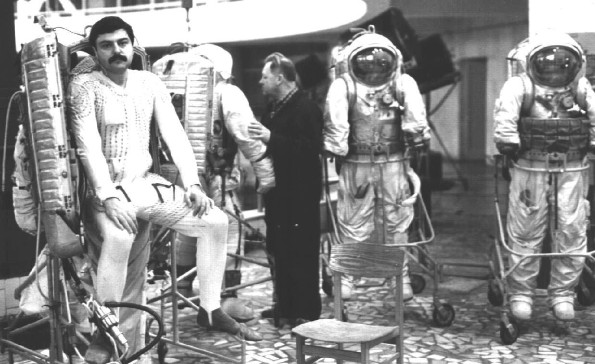
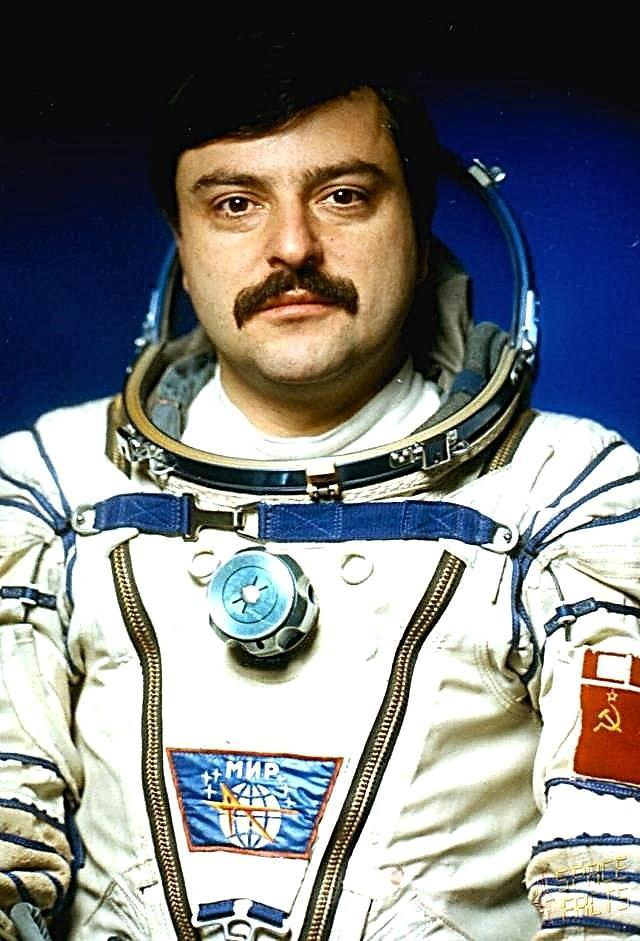

Выход в открытый
космос
космос


Муса Манаров стал 63-м по счету отечественным космонавтом оказавшимся в космосе. Но кроме того он является первым космонавтов- лакцем в мире. В его личном послужном списке два полета на орбиту, общей продолжительностью 541 сутки 0 часов 31 минута 10 секунд. корабль.
Первый полет Манарова (21 декабря 1987 – 21 декабря 1988 г.) в составе основной
экспедиции продлился 365 суток 22 часа 39 минут 47 сек. , побив мировой рекорд.
За это достижение Муса Манаров и Владимир Титов были удостоены попадания в Книгу
рекордов Гиннесса за самый продолжительный полет на тот момент.
Во время полета Манаров выполнил 3 выхода в открытый космос:
26.02.1988 г. – продолжительность 4 часа 25 минут
30.06.1988 г. – продолжительность 5 часов 10 минут
20.10.1988 г. – продолжительность 4 часа 12 минут
